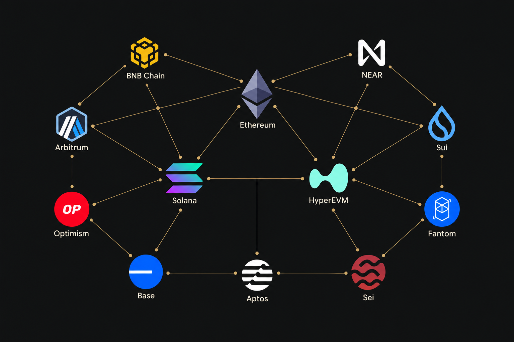

Trading, exploring and using the products. My perspective comes from time spent onchain.
Perpetual DEXsMultichainLaunchpads
01 /
ONCHAIN TRADING
Perpetual DEX.
Hyperliquid · Variational · Lighter
An active Hyperliquid trader from the start.
I’ve used almost every onchain perpetual DEX, including Hyperliquid, Variational and Lighter. I’ve been an active trader on Hyperliquid since the project’s earliest days, and it remains a major part of my onchain activity.
My perspective comes from using these products regularly and experiencing how different platforms approach trading.
02 /
MULTICHAIN EXPERIENCE
Ecosystem user
Exploring protocols across networks

Hands-on experience across the onchain ecosystem.
I’ve been an active user of Ethereum and many of its Layer 2 networks, as well as Solana, HyperEVM, BNB Chain, NEAR, Sui, Fantom, Aptos and Sei.
Today, I still spend a lot of time on Solana, Ethereum and HyperEVM. I’ve used more than 100 onchain projects across lending and borrowing, NFTs, real-world assets (RWA), liquid staking (LSTs), liquid restaking (LRTs), DEXs and other protocols. I’ve also been an early user of many projects, exploring their products from the initial stages.
03 /
TOKEN LAUNCHES & BOT BEHAVIOUR
Launchpad bot Exploit
1,000+ tokens created
Understanding how launch bots react.
On Pump.fun, I identified a weakness in the way trading bots responded to new token launches and found a way to trigger their activity. I created more than 1,000 tokens as part of that strategy.
This gave me direct experience with token launches and the behaviour of automated traders onchain.